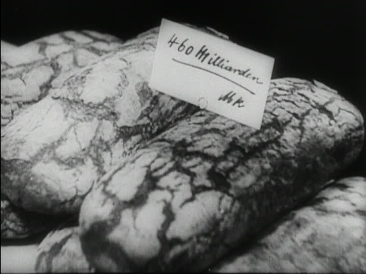
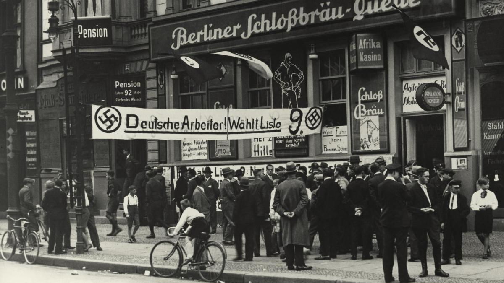
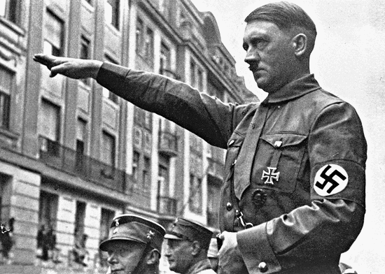

Après la première guerre mondiale (appelée « La grande guerre ».), l’Allemagne est au plus bas. En novembre 1918, il y a la proclamation de la république dite « république de Weimar ». Cependant, il y a une double opposition très virulente. D’un côté celle de l’extrême droite pour qui la république est un synonyme de trahison, d’humiliation… (car c’est celle-ci qui a accepté le « diktat » de Versailles.) et de l’autre côté celle de l’extrême- gauche (spartakistes.) pour qui la république représente l’oppression capitaliste. Presque la moitié des Allemands déteste cette république et veulent sa destruction. Entre les deux extrêmes, Les partis du gouvernement (Communiste, Socialistes démocrates, Libéraux et Zentrum (Catholiques)) doivent former des alliances fragiles. Dans les années 20, il règne donc une atmosphère trouble et violente (combats entre milices, assassinats politiques…).
LES CRISES ÉCONOMIQUES.

L’Allemagne sort en partie ruinée de la Première Guerre mondiale (dévaluation du Mark, paiement des réparations imposées par le traité de Versailles…). En 1923, l’Allemagne ne veut pas payer les réparations. Cela entraîne l’occupation de la Ruhr (importante région industrielle allemande.) par les Français et donc l’effondrement de la monnaie allemande. Il s’ensuit une crise qui entraîna la ruine des épargnants (les comptes en banque ne valent plus rien…), la ruine des commerçants ainsi qu’un profond traumatisme dans la tête des Allemands. Pour résoudre cette crise, les puissances alliées (la France, les États-Unis, la Russie et l’Angleterre.) diminue le montant des réparations et les banques U.S placent de fortes sommes en Allemagne. Entre 1924 et 1929, la croissance ainsi que la prospérité reprennent. Les Allemand recommence à avoir confiance en eux… En 1929 survient le « Crash de Wall Street » qui entraîne le retrait des capitaux U.S d’Allemagne et donc par la suite une nouvelle crise économique et sociale. Celle-ci est très forte et très profonde. En 1932, le point maximum de la crise est atteint. Il y a environ 6 millions de chômeurs (33% de la population.) en Allemagne. De nombreuses petites entreprises font faillites. Les classes moyennes, la petite bourgeoisie sont une fois de plus touchées par une crise. Beaucoup de personnes sont sans revenu, sans logement… La production industrielle est stoppée donc la consommation aussi, les prêts de ne sont pas remboursés aux banques… Il y a une dévaluation du Reichmark. En plus de cela, l’Allemagne doit payer les réparations imposées par le « diktat » de Versailles (Remarque : elles ont été très allégé en 1930/1932 à cause de la situation économique de l’Allemagne liée à la crise.). A ce moment-là, l’Allemagne est au plus bas (elle « sombre ».) ainsi que sa population.
LA MONTÉE DE L’EXTRÊME-DROITE.

Remarque : chaque crise entraîne une hausse des voix pour les nazis.
La population allemande cherche un parti capable de faire sortir l’Allemagne de la crise. Cette crise économique favorise le mouvement nazi (extrême-droite.) avec Hitler, alors appelé NSDAP. Celui-ci propose des solution toutes faites : une politique de réarmement, une forte intervention de l’état dans les dépenses… et un discours populiste. Le partie Nazi désigne des boucs-émissaires (coupables.) pour monter la population Allemande contre eux. D’un côté les coupables extérieurs : Les Alliés dont la France qui ont imposés le « diktat » de Versailles et les Américains, responsable de la crise économique ; de l’autre les coupables intérieurs : Les Communistes (parti de l’U.R.S.S.) et les Juifs soit disant « parasites » qui exploitent l’Allemagne à leur compte.
Le parti Nazi attire surtout les classes moyennes, la petite bourgeoisie, très touchées par les crises de 1923 et 1929 et très sensible aux discours sur la grandeur de l’Allemagne et aux discours anti-juifs. Hitler cherche l’appuie de la grande bourgeoisie : patrons d’industries (famille Krupp…), notables, dirigeants république de Droites, chefs de l’armée comme Ludendorf ou Hindenburg (Président de la République élut en 1925 et réélut en 1932.). Il passe un accord secret avec ces notables : Krupp et le grand patronat fournissent au parti Nazi de l’argent, leur soutien… En échange, Hitler leur promet de favoriser les intérêts de la grande bourgeoisie. Grâce à ces appuis et ces aides, l’influence de Hitler augmente. En 1932, il est au deuxième tour des élections présidentielles. Le 30 janvier 1933, il est nommé Chancelier du Reich par Hindenburg avec l’alliance de la droite et du Zentrum Catholique.
HITLER AU POUVOIR
LA MISE EN PLACE DE LA DICTATURE

En mars 1933, il y a les élections. Les Nazis profitent de l’incendie du Reichstag (Parlement Allemand) pour accuser les communistes d’avoir commis cet attentat et ainsi arrêter les dirigeants communistes pour pouvoir être élus plus facilement. Malgré cela, les Nazis n’obtiennent que 44% des voix. Ils trouvent donc un nouveau stratagème : Les députés communistes sont invalidés ce qui leurs donnent la majorité. Ils votent les pleins pouvoirs et installent leur dictature. Il s’en suit une arrestation des opposants ainsi que la censure des livres, des pièces de théâtre…, l’interdiction des parties et des syndicats, le dévouement des soldats à Hitler (ils prêtent serment.)… À la mort de Hindenburg (le 2 août 1934.), Hitler devient Président et Chancelier du Reich.
LA VIOLENCE POLITIQUE
La brutalité devient la règle du gouvernement :
– élimination des S.A (Sections d’Assauts.)à massacres de leurs chefs et arrestation de Röhm, leur « grand chef » et ami de Hitler à « La nuit des longs couteaux » (30 juin 1934.)
– violence contre les opposants (certains Catholiques et Protestants, Socialistes, Communistes…) notamment déportés dans les camps de travail(Dachau..)
– politique de censure contre les intellectuels (beaucoup s’exilent (Einstein, Oppenheimer, Thomas et Heinrich Mann, B. Brecht, K. Weill…)
– contre les juifs, exclus et marginalisés…
Les Nazis ont beaucoup marginalisés et exclus les juifs. En 1935, ils votent des lois (Lois de Nuremberg.) qui interdisent les mariages mixtes (donc entre juifs et allemands.), qui interdisent certains milieux (les parcs…), qui enlèvent des droits aux juifs. Ils incitent aussi à boycotter les magasins juifs… Il y a donc de la ségrégation envers les juifs. En 1938, les Nazis confisquent une partie des biens des juifs (argent, mobiliers…). Dans la nuit du 9 novembre 1938, les Nazis pillent les magasins juifs, les maisons juives, brûlent les lieux de culte ainsi que les livres religieux… Certains vont jusqu’à blesser et même tuer des juifs… C’est le pogrom de la nuit de Cristal. En 1942, il y a la conférence de Wansee où est décidé la « solution finale » c’est à dire l’extermination des juifs (camps d’extermination, ghettos (ex :Varsovie…).). Au total, il y eut environ plus de 6 millions de morts parmi les Juifs. Les Nazis ont aussi massacrés les tziganes (250 000 morts environ.), les malades mentaux, les homosexuels.